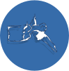

Мануальна терапія - це певний комплекс маніпуляцій з суглобом або хребтом для реалізації рефлекторної дії на
організм

Після ретельної підготовки організму відбувається "траст" (хрускіт у суглобі), він не супроводжується болем

Під час процедури больових відчуттів не має бути, тільки в деяких випадках локальний дискомфорт може бути
присутнім